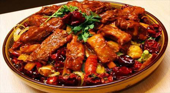
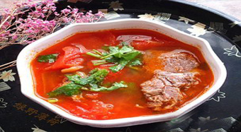
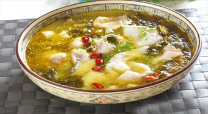
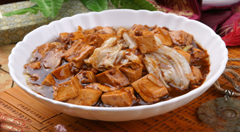
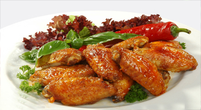
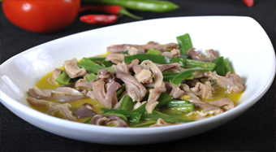

美食专区
- 
麻辣排骨
麻辣适时地将排骨的另一种美味释放出来，排骨本身也是非常的有营养，自然是让人爱不释手了。
- 
牛肉西红柿汤
牛肉西红柿汤超补的哦，大家可以试试看的，这道美食就是要炖着才会好吃的一道菜，
- 
酸菜鱼片
酸菜鱼片是很好的一款食物，因为有酸菜和鱼肉一起配合，鱼肉的鲜嫩配上美味的酸菜汁很有感觉。
- 
肉末烧豆腐
肉末烧豆腐是一道把猪肉末还有豆腐等等为原材料而做出来的一款很有特色的美食。
- 
香辣鸡中翅
鸡翅含有多量可强健血管及皮肤的成胶原及弹性蛋白等，对于血管、皮肤及内脏颇具效果。
- 
青椒焖猪肚
用猪肚炖汤做菜都非常的美味，炒着吃的话口感软滑柔韧越嚼越香呢。
版权所有：舌尖上的美食网